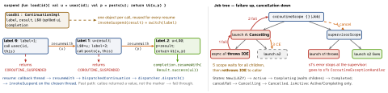

cross-platform · folio
In one line: The compiler rewrites every suspend fun in continuation-passing
style: it gains a hidden Continuation parameter, returns Any?, and its body
becomes a state machine whose label says where to resume. A suspension
returns COROUTINE_SUSPENDED all the way up and frees the thread; later something calls
resumeWith, the dispatcher picks a thread, the machine jumps to the next
label. Job, scopes, cancellation = library (kotlinx.coroutines) on top.
Download PDF Print view LaTeX source


The CPS transform
suspend fun f(x: A): T→ JVMObject f(A x, Continuation<? super T> c). Return isTor the markerCOROUTINE_SUSPENDED(kotlin.coroutines.intrinsics) — henceAny?.interface Continuation<in T> { val context: CoroutineContext; fun resumeWith(result: Result<T>) }— a typed callback carrying its context.- Only functions that call suspend functions get a state machine; one
ContinuationImplsubclass per function, locals live across a suspension are spilled into fields (L$0,I$0…(unverified)), the rest stay on the stack. A suspended coroutine = that heap object, no thread held.
Context & dispatch
CoroutineContext= indexed set ofElements keyed byKey:Job,ContinuationInterceptor(the dispatcher),CoroutineName,CoroutineExceptionHandler.a + b: the right side wins per key;ctx[Job],minusKey.- A child’s context = parent context + builder arg + a new child Job. Passing
Job()as an argument breaks the parent link. - Dispatcher = interceptor:
interceptContinuationwraps soresume→dispatch(). Default: #cores (min 2), CPU work.IO: 64 or #cores, whichever is larger — shares threads with Default, sowithContext(IO)from Default often does not switch thread.IO.limitedParallelism(n)is elastic (beyond the 64);Default.limitedParallelism(n)is a view within Default.Main.immediate: no re-post if already on main.
Example — bridge a callback, cancel cleanly
suspend fun Call.await(): Response =
suspendCancellableCoroutine { cont ->
cont.invokeOnCancellation { cancel() } // propagate inward
enqueue(object : Callback {
override fun onResponse(c: Call, r: Response) = cont.resume(r)
override fun onFailure(c: Call, e: IOException) =
cont.resumeWithException(e)
})
}
suspend fun crunch(xs: List<Int>) = withContext(Dispatchers.Default) {
for (x in xs) { ensureActive(); heavy(x) } // cooperative
}
try { work() } finally {
withContext(NonCancellable) { db.flush() } // may suspend
}
runCatching { fetch() } // TRAP: also catches CancellationException
.onFailure { if (it is CancellationException) throw it }Structured concurrency & cancellation
- Rules: every coroutine has a parent Job; a parent completes only after its
children; cancelling a parent cancels all children; a child failing with a non-
CancellationExceptioncancels its parent and so its siblings. job.cancel()takes only aCancellationException= normal: parent not cancelled, handlers ignore it.- Cancellation is cooperative: a flag that bites at the next cancellable suspension point (
delay,yield,withContext,await…) by throwingCancellationException. CPU loops checkisActive/ensureActive()/yield(). - Suspending in
finallyafter cancel throws again →withContext(NonCancellable).withTimeoutthrows a CE subclass.
Exceptions — who sees what
| Where | What happens to an exception |
|---|---|
root launch | uncaught → its CoroutineExceptionHandler, else the thread’s
uncaught handler (Android: crash) |
root async | stored in the Deferred; thrown at await();
a CEH on it has no effect |
| any child | delegated to the parent, up to the root — a CEH on a child is never used;
an un-awaited child async still fails the parent |
coroutineScope | cancels the rest, waits, rethrows to the caller —
a normal try/catch around it works |
supervisorScope / SupervisorJob | child failure is not propagated; direct children use their own CEH (like roots) |
| several fail | first exception wins, the rest are suppressed |
Traps
runCatching/catch (e: Exception)swallowsCancellationException: the coroutine runs on after cancel.launch(SupervisorJob())in a scope: that Job becomes the parent — nothing supervised, scope cancel no longer reaches it.try/catcharoundlaunch {}catches nothing — the exception goes up the Job tree, not up the call stack.- Blocking calls ignore cancel — use
runInterruptible.
Remember: suspend = callback + state machine · failure up, cancel down · CE is normal · handler at the root.